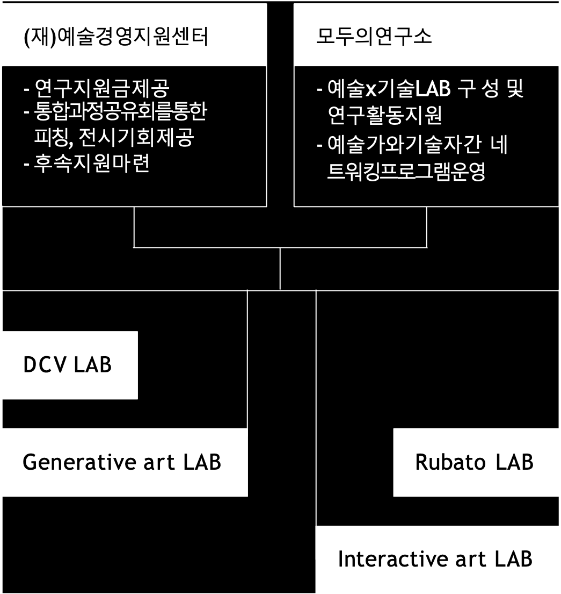

GenAI 전시 소개#
AI로 만든 이런 영상을 보신 적 있으신가요?

Kaiber.ai와 유명 밴드 Linkin Park이 합작하여 만든 Massive라는 곡의 뮤직비디오입니다. 뮤지션들을 음악을 작곡하고 마스터링하며 많은 노력을 쏟습니다. 하지만, 음악만으로 사람들의 시선을 사로잡기 어렵고 막대한 비용과 시간이 투자되어야합니다. 음악 산업 관계자들과의 인터뷰를 통해 뮤직비디오를 기획, 제작하는데 어려움이 있다는 것을 발견했고, 이를 개선하기 위한 방법의 하나로써 생성형 AI 뮤직비디오 제작에 관심을 갖게 되었습니다.
AI 영상 생성에 있어서 유명한 몇 가지 툴을 사용했지만 불편한 점이 있었습니다. 제한적인 화풍 가이드와 러닝 타임에 중점을 둔 서비스는 프롬프트에 대한 세부적인 조정에 한계가 있었고 예술가들은 창의적인 아이디어를 발휘해야하는데 기존의 서비스만으로는 그것을 실현하기가 어려웠습니다.
이번 DCV랩 프로젝트는 누구나 아이디어만 있으면 원하는 스토리라인과 화풍, 카메라 구도를 우리가 제공한 가이드의 세부 조정을 통해 멋진 뮤직비디오를 제작할 수 있도록 지원합니다.
아트코리아랩 지원 사업#
아트코리아랩 예술x기술 연구랩은 해당 분야 연구에 관심이 있는 예술가 혹은 타 분야 전문가가 모여 교류와 연구를 통해 새로운 형태의 결과물을 창출하는 자발적 소모임을 지원하는 사업입니다. 2023년에는 AI기술 관련 교육 및 연구모임 운영에 전문성과 경력을 보유한 ‘모두의연구소’와 업무협약을 통해 총 4개의 랩이 운영되었습니다.

추진 방향#
2023 예술x기술 연구랩은 예술가 간의 모임만이 아닌 다양한 장르(학문) 기반의 다학제적 관점에서 예술×기술에 접근하는 연구소모임(LAB) 을 통해 예술가와 기술 분야 전문가의 네트워킹을 지원하여 예술영역 확장 기회 마련하고자 하였습니다. 예술가는 기술에 대한 막연한 어려움을, 기술전문가들은 예술가와의 대화와 협업에서 어려움을 느낀다고 말하곤 말합니다. 예술x기술 연구랩은 예술가와 기술전문가 네트워킹과 교류 활동을 통해 이런 편견을 극복하고 실제 예술작품을 만들 수 있음을 보이고자 하였습니다. 이에 각각의 연구랩은 예술과 기술을 결합하는 새로운 기법에 도전해 보고 이를 통해 만들어진 작품을 전시하고 교류하는 것을 목표로 하였습니다. 아트코리아랩 랩들이 LAB Coming Day에서는 랩별 연구성과를 발표하여 예술가와 기술전문가가 모두 참여할 수 있는 프로그램으로 구성하였습니다. 이를 통해 다분야간 네트워크를 형성할 수 있는 예술x기술 지식 공유 및 교류의 장과 함께 예술 창업활동의 기반이 되는 커뮤니티의 확장으로 이어지기를 기대합니다.
협력기관#
아트랩 연구기간#
2023년 05월 04일 ~2023년 12월 18일
2023년 아트코리아랩 통합과정공유회#
2023년 11월 23일 ~ 2023년 11월 25일(3일)
연구 내용#
본 연구는 text to image 기술을 활용하여 Stable Diffusion 모델을 기반으로 한 text to video 서비스를 개발하였습니다. deforum 기술을 통해 오디오 신호에 반응하는 비디오를 생성하는 것에 성공하였으며, 오디오의 키 프레임 추출 및 strength schedule 조절을 통한 audio reactive 비디오 생성 방법론을 개발하였다습니다. 연구과정 중에는 여러 convex 함수들을 실험하여 최적의 결과를 도출하였고, AI가 부적절한 내용을 생성하지 않도록 ‘bad prompt’에 대한 관리에도 주의를 기울였습니다.
제작 배경#
이 연구는 예술가들, 특히 무명의 아티스트들이 자신의 음악에 맞는 뮤직비디오를 제작하는 데에 있어 경제적, 기술적 장벽을 경험하고 있다는 문제 인식에서 시작되었습니다. 대조적으로, 음반 제작사들은 많은 자본을 들여 고품질의 뮤직비디오를 제작하고 있습니다. 이러한 불균형을 줄이고자 저비용이면서도 효과적인 뮤직비디오 제작 방안을 모색하게 되었습니다.
연구 소개#
본 연구의 목적은 저비용으로도 고품질의 뮤직비디오를 제작할 수 있는 새로운 기술을 개발하는 데 있습니다. 연구팀은 stable diffusion과 deforum 기술을 중심으로 한 text to video 변환 프로토콜을 개발하였으며, 이를 통해 뮤직비디오 제작의 접근성을 높이고자 하였습니다.
기대 효과#
무명 아티스트들이 경제적 제약 없이 자신들의 음악을 시각화할 수 있는 뮤직비디오를 제작할 수 있게 함으로써, 예술가들의 창작 활동을 지원하고 뮤직비디오 제작의 민주화에 기여할 것으로 기대됩니다. 또한 이 기술은 예술계에서 AI의 활용 가능성을 증진시키고, 창의적인 작업에 대한 새로운 접근 방식을 제시할 것입니다.